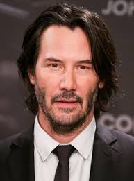
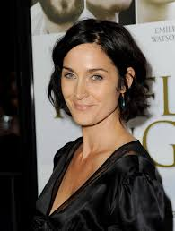
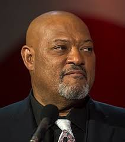

Keanu Reeves
Idade: 59 anos
Nacionalidade: Canadense
Curiosidade: Além de atuar, Keanu também é músico e já doou grande parte de seus ganhos para caridade.
Carrie-Anne Moss
Idade: 57 anos
Nacionalidade: Canadense
Curiosidade: Antes de Matrix, Carrie-Anne atuou em várias séries de TV, mas foi com Trinity que ela alcançou a fama global.
Laurence Fishburne
Idade: 63 anos
Nacionalidade: Americano
Curiosidade: Laurence foi o ator mais jovem a interpretar um soldado em Apocalypse Now, aos 14 anos.